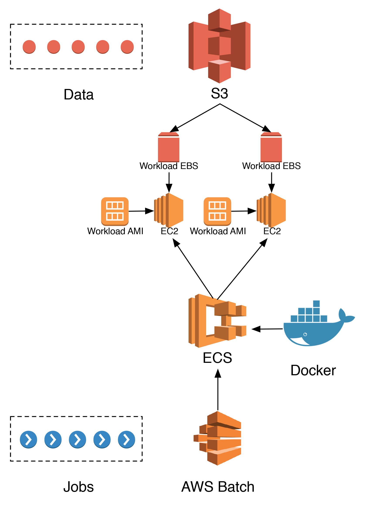
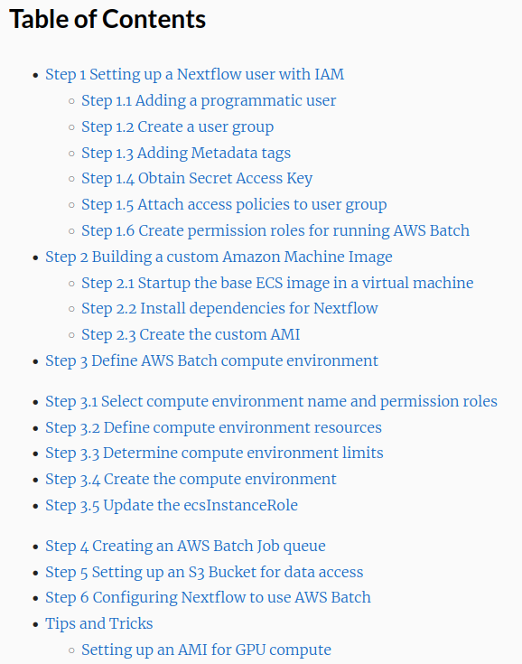
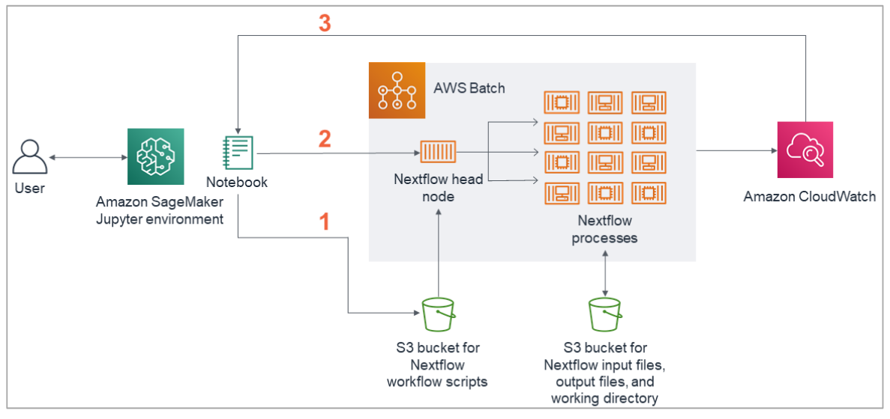
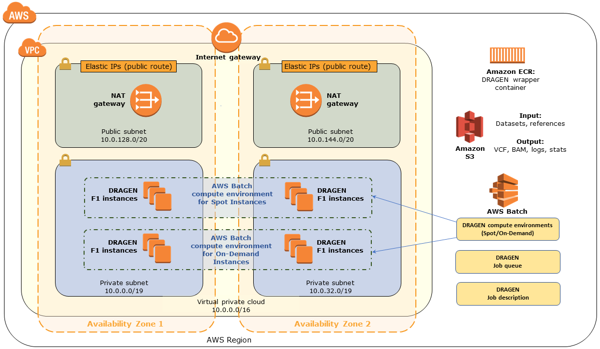
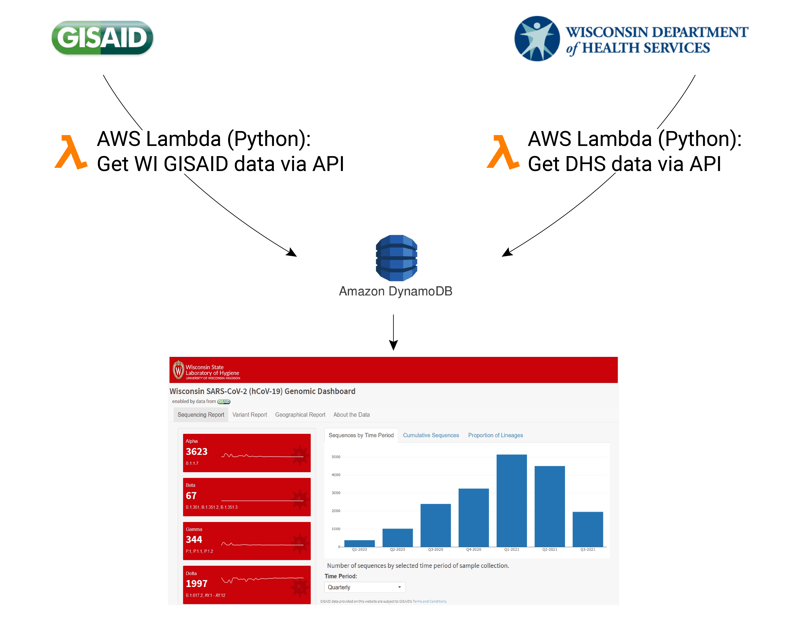

Preparing for Bioinformatics in the Cloud
Wisconsin State Laboratory of Hygiene Kelsey Florek, PhD, MPH August 27, 2021
Slides live at:
www.k-florek.net/talks
www.k-florek.net/talks
From an AWS Perspective
... As a Service

... As a Service

How infrastructure as a service works
Virtual Private Cloud (VPC):
An secure, isolated, private virtual network dedicated to your cloud account. Provides isolation between different cloud users where your resources are not shared with other users.Cloud infrastructure can be used in lots of ways
(you only pay for you what you use)
- Storage only solution
- Connect to VPC resources through secure internet tunnels
- Connect to VPC through a VPN or directly connect VPC to your on-prem network
- Create permanent instances (virtual computers) that run indefinitely
- Create/destroy instances on demand (AWS spot)
Utilizing bioinformatics workflows with AWS

The hard part: Setting up a cloud infrastructure...
Setting it all up yourself
StaPH-B Nextflow AWS Batch Tutorial AWS Nextflow Quickstart
AWS Illumina Dragon Quickstart
Moving up the pyramid
Cloud can offer more than infrastructure
- AWS Lambda: serverless functions (FaaS)
- AWS RDS: SQL database
- AWS DynamoDB: non-relational (NoSQL) database
- AWS SageMaker: machine learning model development environment
- AWS Redshift: petabyte-scale data warehouse service
Example AWS PaaS use case
Tips for implementing a cloud service
- Find IT allies
- Evaluate costing (persistent, on-demand, spot)
- Take advantage of low-cost options
- Plan a monitoring approach (billing, budgets, alarms)
- Consider data backups